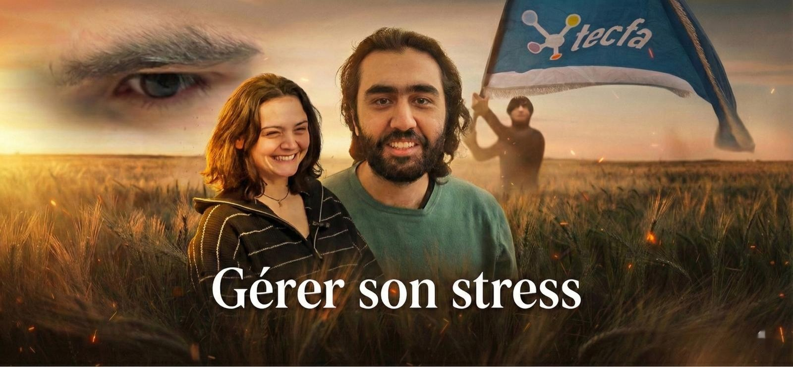
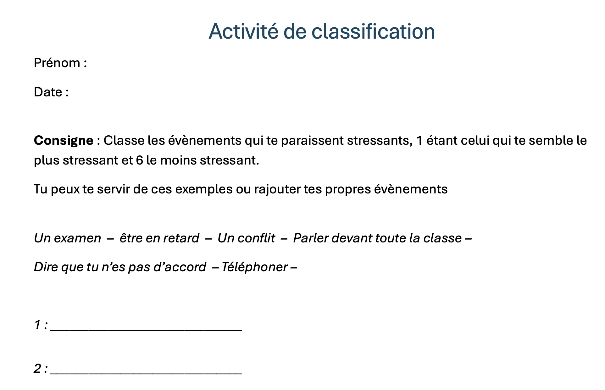
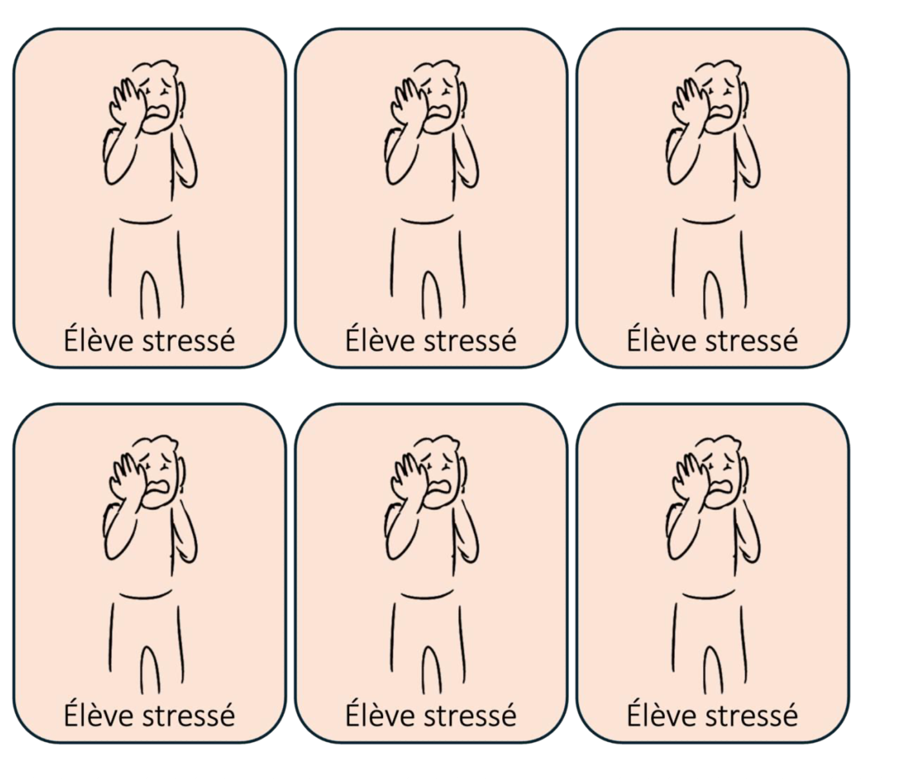
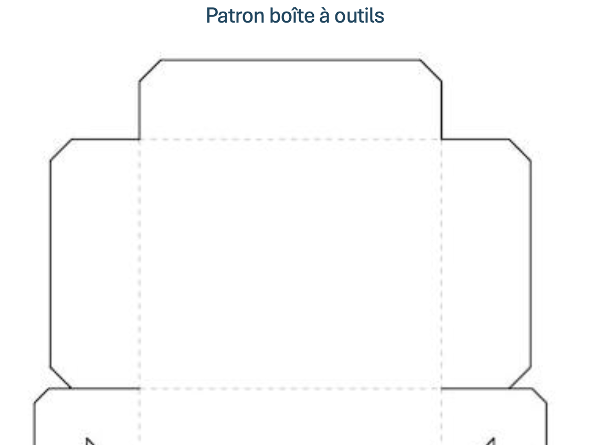
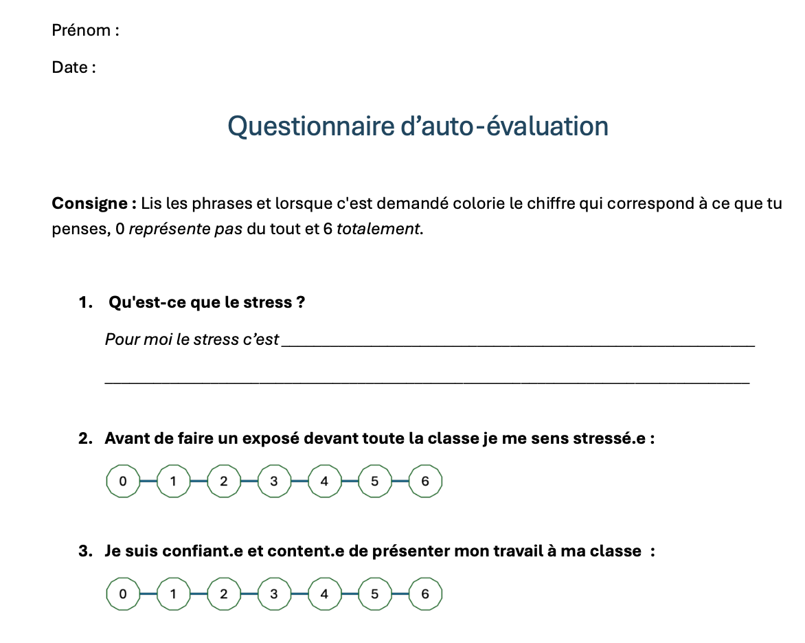

Une approche pédagogique innovante pour accompagner vos élèves vers le bien-être et la sérénité en milieu scolaire.
Cette vidéo est réalisée dans le cadre du cours ADID du MALTT (Master of Science in Learning and Teaching Technologies) de l'Université de Genève.

Naviguez directement vers les sections qui vous intéressent
Téléchargez tous les supports pour vos cours
Le guide pédagogique intégral pour apprendre à gérer le stress en milieu scolaire.
Des exercices pratiques prêts à être utilisés dans vos classes
Reconnaître et évaluer les situations qui peuvent générer du stress.
L'élève parvient à repérer, classer et ordonner les situations stressantes de son quotidien.
Identifier les signes de stress et trouver des méthodes pour les apaiser.

Réussir à se mettre à la place de l'autre. Développer l'empathie. S'approprier des conseils.
L'élève parvient à conseiller un camarade et à reconnaître les comportements déclenchés par le stress.
9 cartes « élève stressé » et 9 cartes « coach » pour des activités en binôme.

Un patron à imprimer et des cartes modèles à construire avec les élèves.
Couleurs personnalisables selon les besoins : vert (apaisement), bleu (colère), rose (conflits).
Devient la boîte à outils personnelle de l'élève pour gérer ses émotions.

Mesurer la progression et la prise de conscience des élèves.
À distribuer au début ET à la fin de la séquence pour mesurer l'évolution.
Permet une réflexion métacognitive sur la gestion du stress.

Des activités interactives pour pratiquer et tester ses connaissances
Testez vos connaissances sur la gestion du stress avec 10 questions.
CommencerÉvaluez votre niveau de stress et recevez des conseils personnalisés.
S'évaluerUn exercice guidé pour pratiquer la technique de respiration anti-stress.
PratiquerGlissez-déposez les situations de stress dans les bonnes catégories.
JouerTirez des cartes de mises en situation pour pratiquer l'expression émotionnelle.
DécouvrirDes astuces simples à partager avec vos élèves
Inspirez 4 secondes, retenez 7 secondes, expirez 8 secondes.
5 choses vues, 4 touchées, 3 entendues, 2 senties, 1 goûtée.
2 minutes de mouvement ou d'étirements entre les activités.
Écrire ses émotions aide à mieux les comprendre et les gérer.